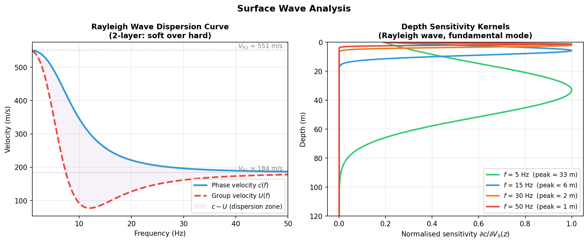
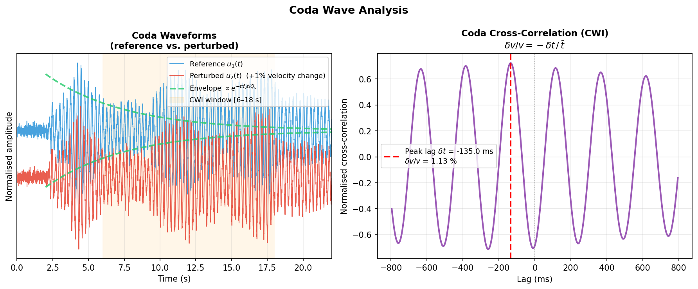

Surface Waves and Coda Waves: Velocity Extraction and Monitoring¶
Introduction¶
Surface waves and coda waves are two fundamentally different components of a seismic record, each carrying rich information about the medium. Surface waves propagate along the Earth's surface and are dispersive — different frequency components travel at different velocities because they sample different depths. The frequency dependence of their phase velocity therefore directly encodes the S-wave velocity structure with depth. Coda waves are the scattered arrivals following the direct P- and S-waves; their amplitude decay constrains \(Q_c\) (coda quality factor), while their fine time structure is exquisitely sensitive to small velocity changes — this is the physical basis of Coda Wave Interferometry (CWI) for velocity monitoring.
| Wave type | Velocity extraction method | Sensitive to | Typical application |
|---|---|---|---|
| Rayleigh wave | Dispersion curve → \(V_S(z)\) inversion | S-wave velocity structure | Near-surface imaging, engineering |
| Love wave | Dispersion curve → \(V_S(z)\) inversion | \(V_S\) (SH component) | Anisotropy, S-wave splitting |
| Coda | Envelope decay → \(Q_c\) | Scattering/intrinsic attenuation | Post-seismic monitoring |
| Coda (CWI) | Cross-correlation time shift → \(\delta v/v\) | Minute velocity changes (0.01%) | Volcano, injection, earthquake precursors |
Basic Properties of Surface Waves¶
Rayleigh and Love Waves¶
| Property | Rayleigh wave | Love wave |
|---|---|---|
| Particle motion | Vertical + radial elliptical polarisation | Horizontal transverse (SH direction) |
| Existence | Any elastic half-space | Requires a low-velocity surface layer (waveguide) |
| Velocity (half-space) | \(V_R \approx 0.92\,V_S\) | Between \(V_S\) of top layer and half-space |
| DAS sensitivity | \(\cos^2\theta\) (along-cable Rayleigh) | Zero for cable parallel to propagation (SH blind) |
Dispersion¶
The most important feature of surface waves is dispersion: different frequencies travel at different speeds because they penetrate to different depths.
Phase velocity \(c(f)\): velocity of equal-phase surfaces; governs waveform shape.
Group velocity \(U(f)\): velocity of the energy envelope, related to phase velocity by:
Normal vs. Inverse Dispersion
- Normal dispersion (\(\mathrm{d}c/\mathrm{d}f < 0\)): low frequencies travel faster; typical of a crust where velocity increases with depth (soft surface layer over hard half-space).
- Inverse dispersion (\(\mathrm{d}c/\mathrm{d}f > 0\)): high frequencies travel faster; occurs when a low-velocity layer is present or velocity decreases with depth.
Depth Sensitivity Rule¶
The sensitivity of Rayleigh-wave phase velocity \(c(f)\) to \(V_S\) at depth \(z\) peaks approximately at:
where \(\lambda\) is the wavelength. This rule gives a rapid frequency-to-depth mapping: - Low frequency → long wavelength → deep structure - High frequency → short wavelength → shallow structure
Relationship Between Rayleigh Velocity and S-Wave Velocity¶
For a homogeneous half-space with Poisson's ratio \(\nu\):
For the typical value \(\nu = 0.25\):
Layered Media
This formula applies only to a homogeneous half-space. In layered media, \(V_R(f)\) is frequency-dependent (the dispersion curve), and \(V_S(z)\) must be recovered by inverting the observed dispersion curve using a forward model (e.g., Thomson-Haskell matrix method).
Extracting and Inverting Dispersion Curves¶
Extraction Methods¶
Active-Source MASW (Multichannel Analysis of Surface Waves)¶
A linear receiver array records surface waves from an active source (hammer or explosive). A frequency-velocity (f-v) transform maps the data to the velocity domain:
where \(\hat{u}(f,x)\) is the frequency-domain displacement at offset \(x\) and \(c\) is the trial phase velocity. Picking the maxima of \(|P(f,c)|\) yields the fundamental (and higher) mode dispersion curves.
Passive Ambient Noise Cross-Correlation¶
Without an active source, cross-correlate ambient seismic noise (traffic, ocean waves) between station pairs:
The envelope of \(C_{ij}(\tau)\) approximates the Green's function between the two stations, from which Rayleigh- and Love-wave phase and group velocities can be extracted. DAS arrays are ideal for this approach due to their high channel density and continuous recording.
Dispersion Curve Inversion¶
Given observed dispersion curve \(c^\text{obs}(f_i)\), estimate the \(V_S(z)\) model by minimizing:
where \(\mathbf{m}\) contains the layer \(V_S\) values and thicknesses, \(\mathbf{c}^\text{pred}\) is computed via the Thomson-Haskell matrix method, and the regularisation term constrains model smoothness.

Figure 1: Left — Rayleigh wave dispersion for a two-layer model (soft over hard). Blue: phase velocity \(c(f)\); red: group velocity \(U(f)\). Low frequencies penetrate deeply (high velocity); high frequencies are confined to the shallow soft layer. Right — Depth sensitivity kernels for four frequencies; the peak depth scales as \(\approx\lambda/3\).Coda Waves¶
Physical Origin¶
When seismic waves propagate through a heterogeneous medium, they are multiply scattered by randomly distributed heterogeneities (faults, pores, mineral boundaries, etc.), producing the coda — the long, decaying tail that follows the direct P- and S-wave arrivals.
Two key properties:
- Amplitude envelope decay: In the single-backscattering model (Aki & Chouet 1975), the mean-square coda amplitude decays as:
- Path averaging: Because coda energy has traversed many different scattering paths, its statistics are insensitive to source–receiver geometry and reflect only the medium's average scattering and attenuation properties.
Coda Q Estimation¶
Taking the logarithm of the envelope equation:
For a fixed frequency \(f\), a linear fit of \(\ln[\langle A^2\rangle \cdot t^3]\) versus \(t\) gives slope \(m = -2\pi f / Q_c\), hence:
Physical Interpretation of Qc
\(Q_c\) reflects both intrinsic attenuation (inelastic dissipation) and scattering attenuation (energy redistribution). Separating the two requires additional analysis (e.g., multiple lapse-time window analysis, MLTWA), but \(Q_c\) alone is a useful path-averaged attenuation metric.
Coda Wave Interferometry (CWI)¶
Principle¶
Late coda arrivals have traveled along extremely long scattered paths of total length \(L \sim vt\) (where \(t\) is lapse time and \(v\) is average velocity). A fractional velocity change \(\delta v\) shifts the travel time of each path by:
Averaging over all coda paths gives the fundamental CWI relation:
where \(\bar{t}\) is the centre lapse time of the analysis window and \(\delta t\) is the measured cross-correlation time shift between two recordings.
Why coda is so sensitive: The phase shift accumulated over a path of length \(L \sim vt\) is \(\delta\phi \propto t\,\delta v/v\). Longer lapse times magnify the signal, allowing detection of velocity changes as small as \(\delta v/v \sim 0.01\%\) — impossible with direct waves.
Doublet Method¶
For two recordings at the same location — a reference \(u_1(t)\) and a current \(u_2(t)\) — compute the cross-correlation within a coda window \([t_a, t_b]\):
The peak lag \(\hat{\tau}\) equals \(\delta t\), giving:
Stretching Method¶
When velocity change is spatially uniform, \(u_2(t) \approx u_1\!\left(t\,(1 + \delta v/v)\right)\) (the time axis is uniformly compressed). Find the stretching factor \(\alpha\) that maximises the correlation coefficient:
Then \(\delta v/v = -\hat\alpha\). The stretching method is more robust at low SNR but assumes spatially homogeneous velocity perturbations.
Later Windows → Higher Sensitivity
The measurement uncertainty scales as \(\sigma_{\delta v/v} \approx T/(2\pi f \bar{t}\,\text{CC})\). Using later coda windows (larger \(\bar{t}\)) directly reduces uncertainty, but requires sufficient SNR. Noise correlation methods can circumvent this trade-off by stacking many windows.

Figure 2: Left — reference coda (blue) and perturbed coda with +1% velocity increase (red); orange band marks the CWI analysis window; green dashed lines show the theoretical envelope \(\propto e^{-\pi f_0 t/Q_c}\). Right — coda cross-correlation function; the peak lag \(\delta t\) gives \(\delta v/v \approx +1.1\%\) (true value: +1.0%).Method Selection Guide¶
| Goal | Recommended method | Required data | Resolution |
|---|---|---|---|
| Shallow \(V_S(z)\) (engineering) | Active-source MASW + inversion | Active source + linear array | Lateral tens of metres |
| Crustal \(V_S\) structure | Passive noise + surface wave tomography | Network ambient noise | Tens to hundreds of km |
| Path-averaged attenuation | Coda \(Q_c\) estimation | Single station + single event | Path average |
| Time-lapse velocity monitoring | CWI doublet / stretching | Repeating events or periodic noise | \(\delta v/v \sim 0.01\%\) |
| Dense near-surface monitoring | DAS noise cross-correlation + CWI | Continuous DAS record | Decimetre-level channel spacing |
Combining DAS with Surface Waves and Coda¶
DAS + noise cross-correlation: DAS provides thousands of virtual stations with spacing as small as 1 m, sampling Green's functions at unprecedented density. Rayleigh-wave dispersion curves extracted from DAS arrays enable fine-scale \(V_S(z)\) profiling.
DAS + CWI: Continuous DAS records along a linear cable allow monitoring of velocity changes caused by fluid injection, induced seismicity, or volcanic activity, with spatial resolution matching the cable geometry.
DAS Directional Response for Surface Waves
DAS measures axial strain; its sensitivity to Rayleigh waves scales as \(\cos^2\theta\) (cable–ray angle). Love waves (pure SH motion) produce zero strain along a cable oriented parallel to the propagation direction. See DAS Distributed Acoustic Sensing for details.
Python Example¶
The code below reproduces both figures in this note. See the full code in the Chinese version.
References¶
- Aki, K., & Chouet, B. (1975). Origin of coda waves: Source, attenuation and scattering effects. Journal of Geophysical Research, 80(23), 3322–3342.
- Park, C. B., Miller, R. D., & Xia, J. (1999). Multichannel analysis of surface waves. Geophysics, 64(3), 800–808.
- Bensen, G. D., Ritzwoller, M. H., Barmin, M. P., Levshin, A. L., Lin, F., Moschetti, M. P., … & Yang, Y. (2007). Processing seismic ambient noise data to obtain reliable broad-band surface wave dispersion measurements. Geophysical Journal International, 169(3), 1239–1260.
- Snieder, R. (2006). The theory of coda wave interferometry. Pure and Applied Geophysics, 163(2–3), 455–473.
- Sens-Schönfelder, C., & Wegler, U. (2006). Passive image interferometry and seasonal variations of seismic velocities at Merapi Volcano, Indonesia. Geophysical Research Letters, 33(21), L21302.
- Shapiro, N. M., & Campillo, M. (2004). Emergence of broadband Rayleigh waves from correlations of the ambient seismic noise. Geophysical Research Letters, 31(7), L07614.
- Lindsey, N. J., Martin, E. R., Dreger, D. S., Freifeld, B., White, S., Monga, S. K., … & Ajo-Franklin, J. B. (2017). Fiber-optic network observations of earthquake wavefields. Geophysical Research Letters, 44(23), 11–792.